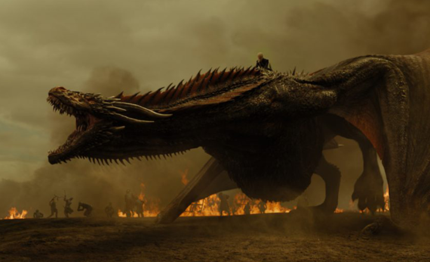
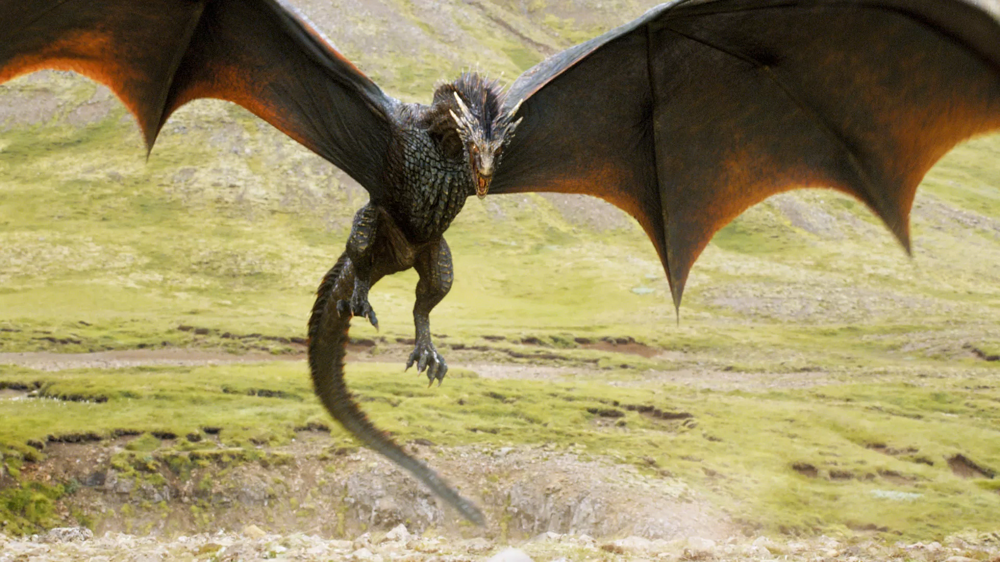
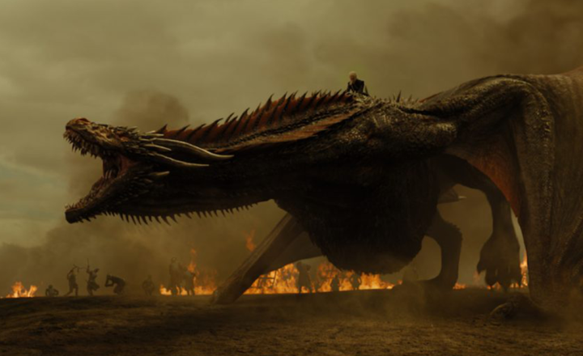
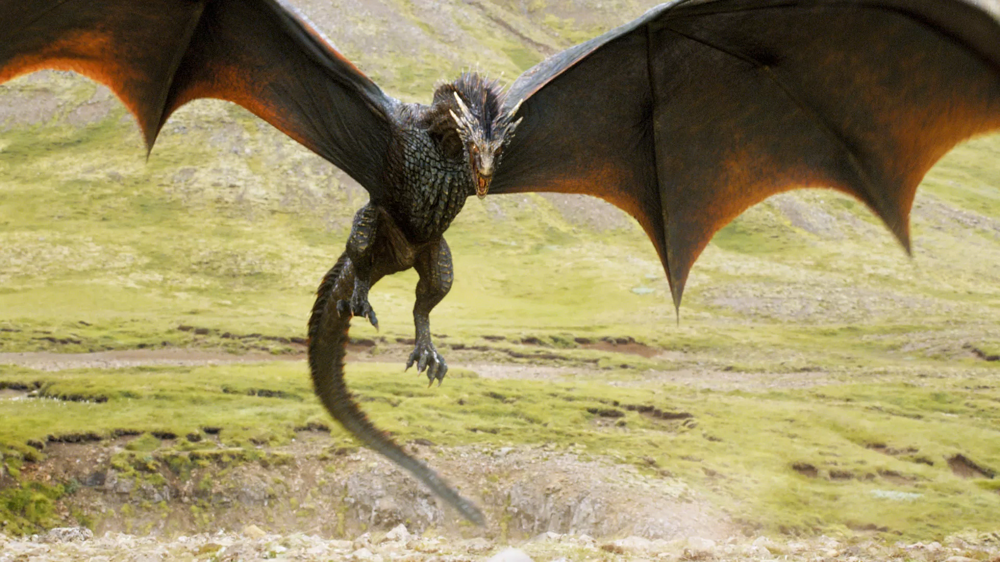

Game of Thrones
Bem-vindo ao Mundo de Game of Thrones
Entre em Westeros, um continente marcado por batalhas épicas, intrigas políticas e o constante jogo pelo Trono de Ferro.
Game of Thrones é uma das séries mais aclamadas de todos os tempos, adaptada da saga literária As Crônicas
de Gelo e Fogo de George R. R. Martin.
A trama mergulha os espectadores em um mundo onde famílias poderosas lutam por
poder, enquanto forças sobrenaturais e dragões antigos despertam nas fronteiras do reino.
Cada personagem carrega consigo uma história de ambição, traição e honra, enquanto reis, rainhas e cavaleiros travam batalhas
sangrentas pelo controle dos Sete Reinos.
Além da luta pelo trono, uma ameaça ainda maior cresce ao norte, onde os Caminhantes Brancos marcham para trazer o inverno eterno.
Prepare-se para explorar histórias de alianças frágeis, heróis inesperados e vilões inesquecíveis.
Game of Thrones é muito mais do que uma luta pelo poder — é uma jornada emocionante de lealdade, vingança e destino.
 



Desenvolvimento de Game of Thrones
A jornada para transformar os livros da série As Crônicas de Gelo e Fogo de George R. R. Martin em um dos maiores
fenômenos da televisão começou em 2006, quando os produtores
David Benioff e D.B. Weiss receberam a difícil missão de
adaptar o extenso e complexo mundo de Westeros.
Com inúmeras tramas, personagens e uma mitologia vasta, o desafio era transformar a série literária em uma narrativa visual
que mantivesse a profundidade e o realismo dos livros.
A primeira temporada, lançada em 2011 pela HBO, rapidamente conquistou uma base de fãs fiel, impressionando pelo detalhismo
na criação de cenários, figurinos e efeitos especiais.
Grande parte do sucesso da série se deve ao compromisso com a autenticidade, filmando em locações reais como a Irlanda do
Norte, Croácia, Islândia e Espanha, criando a sensação de
que o mundo de Westeros era palpável e tangível.
Um dos aspectos mais marcantes do desenvolvimento de Game of Thrones foi a dedicação em construir personagens
complexos, com suas motivações ambíguas e trajetórias imprevisíveis.
A série se destacou ao não seguir fórmulas tradicionais, ousando chocar os espectadores com reviravoltas inesperadas, como a
famosa cena da morte de Ned Stark e o Casamento Vermelho.
Ao longo de suas oito temporadas, Game of Thrones não apenas se estabeleceu como um marco da TV moderna, mas
também elevou o padrão de qualidade para produções
televisivas, com orçamentos dignos de grandes filmes de Hollywood, batalhas
épicas e efeitos visuais inovadores.
Com um elenco talentoso e roteiros marcantes, a série redefiniu o gênero de fantasia, tornando-se um ícone da cultura pop e abrindo
caminho para outras adaptações ambiciosas no futuro.